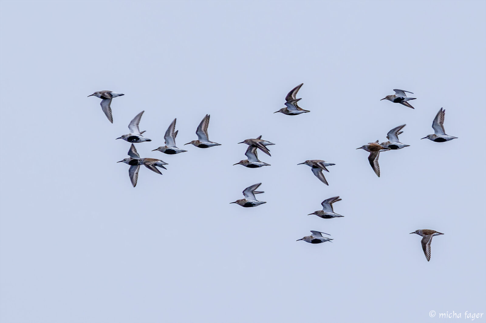

🌱 Spring Arrives Early in Finland

Spring started early and migratory birds arrived and temperature has remained exceptionally warm in the spring.
According to the YLE-news and weather forecasts, the temperature is higher than long-term average.
Many scientists believe this is due to climate change.
Migratory Birds Return Early
People have documented the arrival of bird species that typically don't reach Finland until late spring. Species spotted include:
- Western marsh harrier
- Eurasian curlew
- Meadow pipit
- White wagtail
- Eurasian crane
Many people have started watching birds with binoculars and many have been able to spot many birds.
Scientists are worried if spring starts too fast because birds might not find enough food or bugs to eat.
People are watching closely to see how climate change can hurt nature in Finland. Animal experts are also tracking how birds move so they can help protect them.
Now everyone in Finland is just waiting and watching. Both scientists and regular people want to see how this early spring will change our nature and animals.